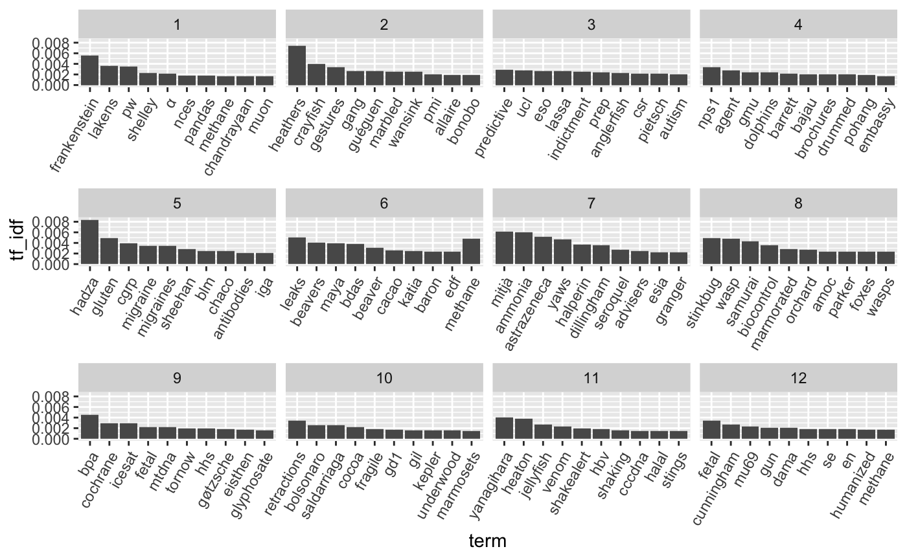
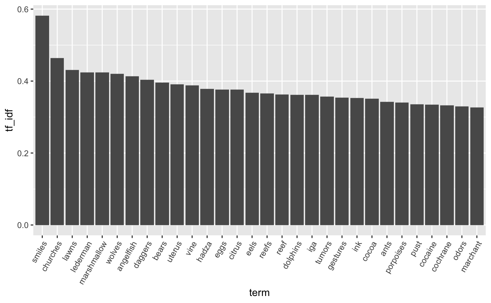

Accessing-WARCs-from-the-Common-Crawl.RmdLoad libraries.
library(ccwarcs)
library(tidyverse)
#> ── Attaching packages ────────────────────────────────────────────────────────── tidyverse 1.2.1 ──
#> ✔ ggplot2 3.2.1 ✔ purrr 0.3.2
#> ✔ tibble 2.1.3 ✔ dplyr 0.8.3
#> ✔ tidyr 0.8.3 ✔ stringr 1.4.0
#> ✔ readr 1.3.1 ✔ forcats 0.4.0
#> ── Conflicts ───────────────────────────────────────────────────────────── tidyverse_conflicts() ──
#> ✖ dplyr::filter() masks stats::filter()
#> ✖ dplyr::lag() masks stats::lag()
library(rvest)
#> Loading required package: xml2
#>
#> Attaching package: 'rvest'
#> The following object is masked from 'package:purrr':
#>
#> pluck
#> The following object is masked from 'package:readr':
#>
#> guess_encoding
library(tidytext)
library(tm)
#> Loading required package: NLP
#>
#> Attaching package: 'NLP'
#> The following object is masked from 'package:ggplot2':
#>
#> annotateTest whether AWS credentials can be located.
test_AWS_credentials() %>%
stopifnot()
#> Locating credentials
#> Checking for credentials in user-supplied values
#> Checking for credentials in Environment Variables
#> Using Environment Variable 'AWS_ACCESS_KEY_ID' for AWS Access Key ID
#> Using Environment Variable 'AWS_SECRET_ACCESS_KEY' for AWS Secret Access Key
#> Using default value for AWS Region ('us-east-1')
#> AWS credentials were found.Create a new ccwarcs_options object with default values. If the directory ~/.ccwarcs_cache does not already exist, the package will ask if you would like to create it.
opts <- ccwarcs_options()
opts
#> $cache
#> [1] "~/.ccwarcs_cache"
#>
#> $cdx_sleep
#> [1] 0.3
#>
#> $page_size
#> NULL
#>
#> attr(,"class")
#> [1] "ccwarcs_options"Get the current list of crawls.
crawls <-
cdx_fetch_list_of_crawls() %>%
getElement('id')
crawls
#> [1] "2019-35" "2019-30" "2019-26" "2019-22" "2019-18"
#> [6] "2019-13" "2019-09" "2019-04" "2018-51" "2018-47"
#> [11] "2018-43" "2018-39" "2018-34" "2018-30" "2018-26"
#> [16] "2018-22" "2018-17" "2018-13" "2018-09" "2018-05"
#> [21] "2017-51" "2017-47" "2017-43" "2017-39" "2017-34"
#> [26] "2017-30" "2017-26" "2017-22" "2017-17" "2017-13"
#> [31] "2017-09" "2017-04" "2016-50" "2016-44" "2016-40"
#> [36] "2016-36" "2016-30" "2016-26" "2016-22" "2016-18"
#> [41] "2016-07" "2015-48" "2015-40" "2015-35" "2015-32"
#> [46] "2015-27" "2015-22" "2015-18" "2015-14" "2015-11"
#> [51] "2015-06" "2014-52" "2014-49" "2014-42" "2014-41"
#> [56] "2014-35" "2014-23" "2014-15" "2014-10" "2013-48"
#> [61] "2013-20" "2012" "2009-2010" "2008-2009"Search for archived articles published in 2018.
url <- "https://www.sciencemag.org/news/2018/*"
idx <- get_cc_index(url, crawls[1], .options = opts)Get the HTML of the archived articles.
warcs <-
idx %>%
filter(status == 200) %>%
mutate(page = get_warc(filename, offset,
length, digest,
.options = opts))If you would like to look at the contents of the archived HTML, you can do something like the following. The code below saves the HTML to a temporary file location, then opens it in a web browser.
browse_html_string <- function(html) {
fp <- tempfile(fileext = '.html')
readr::write_file(html, fp)
browseURL(paste0("file://", fp))
}
warcs$page[1] %>%
browse_html_string()Looking at one of the web pages (using the code above), determine which part of the page you want to extract. For these articles, the article’s main text can be obtained with the code below.
article_text_from_html_string <- function(html) {
html %>%
minimal_html() %>%
html_nodes(".article__body p") %>%
html_text() %>%
str_c(collapse = "\n")
}
warcs$page[1] %>%
article_text_from_html_string() %>%
str_trunc(500) %>%
str_replace_all('\\s*\\n\\s*\\n', '\n') %>%
cat()
#> A chip that traps ions is the basis for a Department of Energy testbed quantum computer.
#> By Adrian ChoJan. 10, 2018 , 3:00 PM
#> The U.S. Department of Energy (DOE) is joining the quest to develop quantum computers, devices that would exploit quantum mechanics to crack problems that overwhelm conventional computers. The initiative comes as Google and other companies race to build a quantum computer that can demonstrate “quantum supremacy” by beating classical computers on a test problem. But ...Extract the article text for all archived HTML pages.
Use the tidytext package to tokenize the articles into words. Then remove common words (stop_words) and “words” comprising only numbers.
article_words <-
articles %>%
select(timestamp, urlkey, article) %>%
unnest_tokens(output = 'word', input = 'article',
token = 'words', format = 'text',
to_lower = TRUE, drop = TRUE) %>%
anti_join(stop_words, by = 'word') %>%
filter(!str_detect(word, '^[0-9\\.,]+$')) %>%
mutate(month = str_extract(urlkey, '/2018/[0-9]{2}/'),
month = as.integer(str_sub(month, 7, 8)))For each month, pool all words together, then calculate the term frequency - inverse document frequency. Visualize the top 10 words per month.
article_words %>%
select(month, word, article = urlkey) %>%
count(month, word, sort = TRUE) %>%
bind_tf_idf(word, month, n) %>%
group_by(month) %>%
top_n(10, tf_idf) %>%
filter(row_number() <= 10) %>%
ungroup() %>%
mutate(term = factor(word, ordered = TRUE) %>% fct_reorder(-tf_idf)) %>%
arrange(desc(term)) %>%
ggplot(aes(x = term, y = tf_idf)) +
geom_bar(stat = 'identity') +
facet_wrap(~month, scale = 'free_x') +
theme(axis.text.x = element_text(angle = 60, hjust = 1))
For each article, calculate the Tf-Idf, then plot the most distinctive words across all articles in 2018.
article_words %>%
select(word, article = urlkey) %>%
count(article, word, sort = TRUE) %>%
bind_tf_idf(word, article, n) %>%
group_by(word) %>%
top_n(1, tf_idf) %>%
filter(row_number() == 1) %>%
ungroup() %>%
top_n(30, tf_idf) %>%
mutate(term = factor(word, ordered = TRUE) %>% fct_reorder(-tf_idf)) %>%
ggplot(aes(x = term, y = tf_idf)) +
geom_bar(stat = 'identity') +
theme(axis.text.x = element_text(angle = 60, hjust = 1))